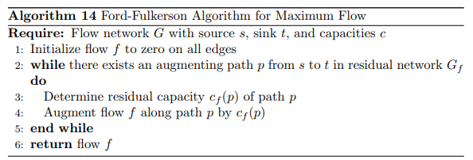

Governance
Secure Multi-Party Computation (SMPC) for Citizen Participation
View Code| Time Complexity | Space Complexity |
|---|---|
| O(n) | O(n) |
SMPC is used to enable secure and private computation among multiple parties, with both time and space complexities dependent on the number of participants.
Network Flow Algorithm (Ford-Fulkerson) IT Connectivity
View Code| Time Complexity | Space Complexity |
|---|---|
| O(|E| * max_flow) | O(|V| + |E|) |
The Ford-Fulkerson algorithm is used to compute the maximum flow in a flow network, where time complexity depends on the number of edges and the maximum flow, and space complexity depends on the number of vertices and edges.
Built Environment
Genetic Algorithm for Mixed-use Development
View Code| Time Complexity | Space Complexity |
|---|---|
| O(g * p * f) | O(p) |
Genetic algorithms are used for optimization problems like mixed-use development, with time complexity depending on generations, population size, and fitness function evaluation, and space complexity on population size.
Simulated Annealing for Compactness and Public Open Space
View Code| Time Complexity | Space Complexity |
|---|---|
| O(k * f) | O(1) |
Simulated annealing is used for optimization tasks such as spatial layout, with time complexity dependent on iterations and solution evaluation, and constant space complexity.
Dynamic Programming (Subset Sum Problem) for Housing Allocation
View Code| Time Complexity | Space Complexity |
|---|---|
| O(n * S) | O(S) |
Dynamic programming techniques like the subset sum problem are used for housing allocation, with time complexity based on number of elements and the target sum, and space complexity on the target sum.
Social Aspects
Dynamic Programming (Assignment Problem) for Educational Resource Allocation
View Code| Time Complexity | Space Complexity |
|---|---|
| O(n^3) | O(n^2) |
The assignment problem is solved using dynamic programming for educational resource allocation, with cubic time complexity and quadratic space complexity.
k-D Tree for Healthcare Facility Placement Optimization
View Code| Time Complexity | Space Complexity |
|---|---|
| O(n log n) | O(n) |
k-D Trees are used for efficient nearest neighbor searches in healthcare facility placement, with log-linear time complexity for construction and linear space complexity.
A* Search for Safety and Security Measures
View Code| Time Complexity | Space Complexity |
|---|---|
| O(b^d) | O(b^d) |
A* search is used to find the shortest paths for emergency response, with exponential time and space complexities in the worst case depending on the branching factor and depth of the solution.
Economy
City Electrification Stratergy using Prim's and Kruskal's
View Code| Time Complexity | Space Complexity |
|---|---|
| O(E log V) | O(V + E) |
City electrification prioritizes efficiency with minimal transmission loss using Prim's and Kruskal's algorithms, which minimize connection weights for cost-effective solutions.
Bipartite Matching for Employment
View Code| Time Complexity | Space Complexity |
|---|---|
| O(n^2) | O(n) |
Algorithm for economic analysis and employment dynamics, with quadratic time complexity concerning the number of elements and linear space complexity.
Urban Environment
Decision Tree for Pollution Level Prediction
View Code| Time Complexity | Space Complexity |
|---|---|
| O(n log n) | O(n) |
Algorithm for reducing pollution levels in urban areas, with time complexity depending on sorting operations and linear space complexity.
Transportation and Mobility
Dijkstra's Algorithm for Public Transportation
View Code| Time Complexity | Space Complexity |
|---|---|
| O(n^2) | O(n) |
Optimization algorithm for public transportation routes, with quadratic time complexity concerning the number of elements and linear space complexity.
Flyod-Warshall Algorithm for Walkability
View Code| Time Complexity | Space Complexity |
|---|---|
| O(n^3) | O(n^2) |
Algorithm assessing walkability factors in urban planning, with cubic time complexity concerning the number of elements and quadratic space complexity.
Water and Sanitation
Water Supply and Management using Ford-Fulkerson
 View Code| Time Complexity | Space Complexity |
|---|---|
| O(n^2) | O(n) |
Efficient algorithm for water supply management, with quadratic time complexity concerning the number of elements and linear space complexity.
Sanitation and Waste Management using Traveling Salesman Problem
View Code| Time Complexity | Space Complexity |
|---|---|
| O(n^2) | O(n^2) |
Algorithm addressing sanitation and waste management issues, with quadratic time complexity concerning the number of elements and quadratic space complexity.